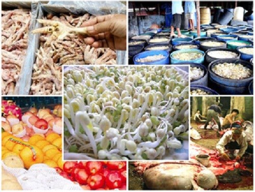

News Focus
Because of high profits, many people are willing to fight back against the authorities to bring dirty food to the domestic market.
Recently, when the Hanoi city authorities discovered a truck carrying dirty organs, the engine continued to run away at a speed of a hundred km / h. Finally, after the nearly 10km track, this car only stopped when it hit the traffic police car directly, causing the car's tail to be distorted and deformed.
Through the inspection of the functional forces, on the car loaded with pig's broth, it is estimated that the weight is about 3 tons. According to the labels on each block of meat, this number of products originated from across the border, not quarantined by any agency, allowed to import. Despite being frozen, but the number of piggles has been damaged because every piece of meat appears black and blue mold.


Related News